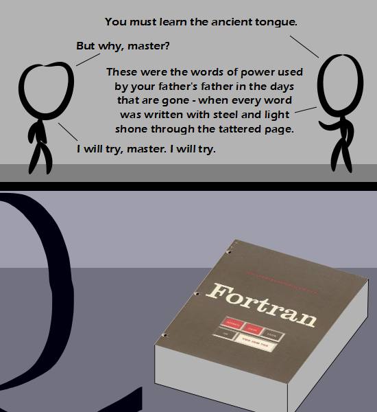

Comic JK 823
When I Feel Like It
⇤
<
?
>
⇥

⇤
<
?
>
⇥
Forum
.
RSS
.
Digg
.
Facebook
.
Reddit
.
Twitter
.
Stumbleupon
PRINT*,"Enter your thoughts on number 823 here. Please, no spamming, trolling, phreaking, or arguing the merits of LISP." Your mother is an expert at COBOL. agg don't remaind it to me, i must learn it soon... ;( Fortran! An elegant weapon, from a more civilized age. >Like a rock tied to a stick? >>It wasn't that bad. And if you can master it, your programs run bloody fast. Of course, if you're going for epic speed code, might as well skip FORTRAN (it is all caps, technically) and take on Assembly. (FORTRAN may have some merits over Assembly, I don't know the specifics of either language) >>> It's actually "Fortran" now. Welcome to the third millennium. >>>> Indeed, it used to be "FORTRAN" and is now "Fortran". Although I always felt it should have been "ForTran". >>>>>However, the words of power used by my father were those of FORTRAN, not Fortran. My father's a second millenium programmer. FORTRAN is great, we still use it every day in the Nuke industry / Physics testing. Epic speed indeed, especailly helpful for real-time nuclear simulation. and I like the line 'written with steel', I assume it is a reference to a typewriter used to create input cards for your FORTRAN code. >And light shining through the page would refer to the resulting holes in the cards Is FORTRAN "faster" than C or C++? Can anybody summarize the key language features that make FORTRAN stand out? > "Faster" is mostly dependent on coding style and the compiler. Since there is no run-time garbage collector or other overhead, it should generally be as fast as C/C++. >>That's kind of what I was thinking. Does it provide higher-level constructs than C++ though, that being the reason people would still use it? Or is it strictly a legacy thing? >>> It's still widely used for scientific number crunching and super computing applications. I think the syntax is simply and more suited to that. Think places where you would use Matlab, except actually want it to perform fast. >>>> Exactly, also if you ever need to debug, or find a rogue mis-statement, you'd probably rather take a pin and stick it in your eye. (relevant to FORTRAN as well: bash.org/?741596) (note, still on mostly FORTRAN77 here, with a select few FORTRAN90 functions added) >>>>> wait, you mean you don't just ask your computers nicely and they do it? How barbaric! >>>>>> nope, we forgot to make them with the Three Laws, so when we ask them nicely they just ignore us... >>>> Though don't forget how even the very first FORTRAN compilers were optimising - the intermediate code stage was for just that purpose. >>>>>>>> As I recall, the original FORTRAN was developed as an engineering/physics scripting language, and in terms of abstraction, it's about the same level as C (you'll recall lower level languages are closer to how computers function - high level is easy for us to make but harder for computers to interpret (coding is fast, running is slow, like BASIC), and low level is the opposite, which is why firmware for one's phone runs fast despite the amusingly piddly stats on how much computing power a phone has. FORTRAN basically is the original MATLAB...it's just that MATLAB was a huge downgrade...I never did hear an explination for why it's such a slow setup - it's worse than Java by a significant margin (at least in short programs; Java seems to have a point at which it just hits a brick wall and starts limping), and as far as I know, MATLAB has nowhere near the kind of overhead Java has. One thing Fortran has is native matrix manipulations. Very handy. >and we all know how well The Matrix worked out ;P >>It was pretty damn impressive is what it was. >>>for its time... Why have I gotten an RSS feed entry for comic 823, 824 and 825, and all of them have been this exact comic with the same comments thread? >Perhaps the way it is setup is a script fetches the newest comic and sends out the notification, whether or not it is different than the previous one, less manual work that way. >> Script was written in FORTRAN and there is an array out of bounds silent failure, *but* the script ran insanely fast. +1 for FORTRAN